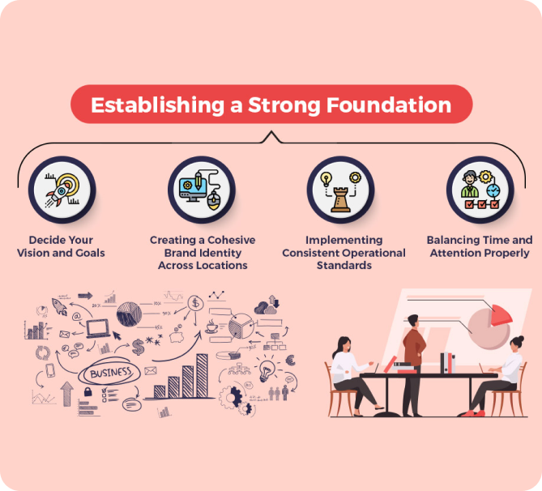

How to Optimise Operations for Multi-Location Restaurants with Online Ordering
Managing a multi-location restaurant chain comes with its unique set of challenges. With different locations operating under the same brand, ensuring consistency in service quality, menu management, and order fulfillment can be daunting. Adding an online ordering system into the mix further complicates operations. However, with the right strategies, restaurant owners can streamline processes, reduce costs, and offer a consistent experience across all locations. This guide will provide actionable tips to optimize operations for multi-location restaurants with online ordering.
1. Centralise Online Order Management Across All Locations
One of the most effective ways to optimize operations for multi-location restaurants is to implement a centralized online order management system. A single dashboard that consolidates orders from all locations helps streamline workflows and ensures consistency.
- Use a Unified POS System: Choose a POS system that integrates seamlessly with your online ordering platform and can handle multi-location management. A unified system allows you to view sales, inventory, and order statuses for each location in real-time.
- Centralize Menu Management: Create and update menus from a central location to ensure consistency across all branches. This prevents discrepancies in pricing or item availability, providing a uniform customer experience.
- Automate Order Routing: Use automation tools to route orders to the correct location based on the customer’s address. This reduces manual errors and ensures that the nearest location fulfills the order, speeding up delivery times.
2. Implement Location-Based Menu Customization
Different locations might have unique menu offerings based on local preferences or ingredient availability. Optimize your online ordering platform to support location-specific menus while maintaining the brand’s overall look and feel.
- Dynamic Menus for Each Location: Use an online ordering system that allows you to set up dynamic menus for different locations. For example, a seafood specialty may be available at coastal locations but not in inland branches.
- Location-Based Pricing Adjustments: Adjust pricing based on local demand, costs, or promotional strategies. This flexibility ensures that each location can optimize profitability without affecting the overall brand perception.
- Highlight Local Specials and Offers: Promote location-specific deals and special items directly on your online ordering platform to encourage more orders from nearby customers.
3. Optimize Inventory Management and Supply Chain Coordination
For multi-location restaurants, coordinating inventory and supply chain logistics is a crucial factor in maintaining smooth operations. Implementing an integrated system that provides visibility across all locations will help prevent stockouts and overstocking.
- Real-Time Inventory Syncing: Use a platform that syncs inventory in real-time across all locations. This prevents over-ordering, minimizes waste, and ensures that customers always see accurate stock levels when ordering online.
- Centralized Supplier Management: Manage suppliers and procurement centrally for bulk purchasing and cost savings. Use the system to track deliveries and inventory movement between locations.
- Implement Inventory Alerts: Set up automated alerts for low-stock items to ensure that popular menu items are always available and can be restocked before running out.
4. Streamline Delivery and Pickup Logistics
Managing delivery and pickup for multiple locations requires a well-coordinated logistics strategy. Optimize your delivery operations to reduce costs, improve efficiency, and provide a superior customer experience.
- Use Smart Delivery Routing: Implement smart delivery routing software that assigns deliveries to drivers based on their location, order load, and traffic conditions. This ensures faster delivery times and reduces fuel costs.
- Enable Curbside Pickup and In-Store Pickup Options: Offer convenient pickup options for customers, allowing them to choose the nearest location for in-store or curbside pickup. Clearly indicate the pickup location during the order process.
- Coordinate with Third-Party Delivery Services: For locations without in-house delivery drivers, partner with local third-party delivery services to extend your reach without investing in a delivery fleet.
5. Maintain Consistency in Branding and Customer Experience
With multiple locations, maintaining a consistent brand experience is crucial. Customers should receive the same quality of service and food regardless of which branch they order from. Use the following strategies to ensure consistency:
- Standardize Training for Staff: Implement a standardized training program across all locations to ensure that staff members are well-versed in handling online orders, customer inquiries, and delivery processes.
- Use a Centralized Brand Guideline: Develop a brand guideline that covers everything from menu presentation to packaging design. This ensures that customers receive the same experience regardless of location.
- Provide Uniform Customer Support: Use a centralized support team to handle customer inquiries, complaints, and feedback. This helps maintain a consistent voice and resolution process across all locations.

Amit Lakahani
CEO & Founder of
Tryzen Solution

posts
followers
following
TryzenSolution
We help to create üéÅ E-commerce & restaurant owners to create website and application to üöÄ grow business üíª.


Other Important Blogs
-

how to avoid 3rd party delivery charge and i can my Save 25% Delivery Costs for my Restaurant.
-

How to i start growing Offline business to Online my Restaurant’s First Online Ordering Platform
-

How to Ensure Consistency in Online Orders Across Multiple Restaurant Locations
-

Creating a Unified Brand Experience: Connecting Your Restaurant’s Online and Offline Presence
-

How Technology is Shaping the Future of the and how Trends Redefining Restaurant Industry
-

Boost Your Restaurant’s Online Reputation: How to Ask for Reviews Without Sounding Pushy